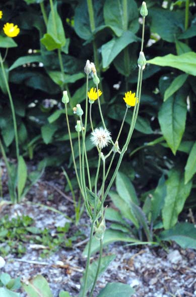
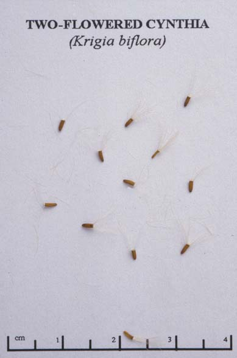

Krigia biflora
Family: Asteraceae
False Dandelion
Swink/Wilhelm #9

FLOWERING: Mid-May to Early July
SEED TIMING: June to Mid-July
HABITAT: Open woods - Savanna
DIAGNOSTIC FEATURES: 8 to 21 inches high. Yellow-orange Dandelion-like flower heads top a smooth forking stem. 1 or 2 small, thin, light-green, oval leaves clasp stem below fork. Basal leaves are paddle-shaped.
TO PICK: Pick entire head when flower/seed head turns to fluff.